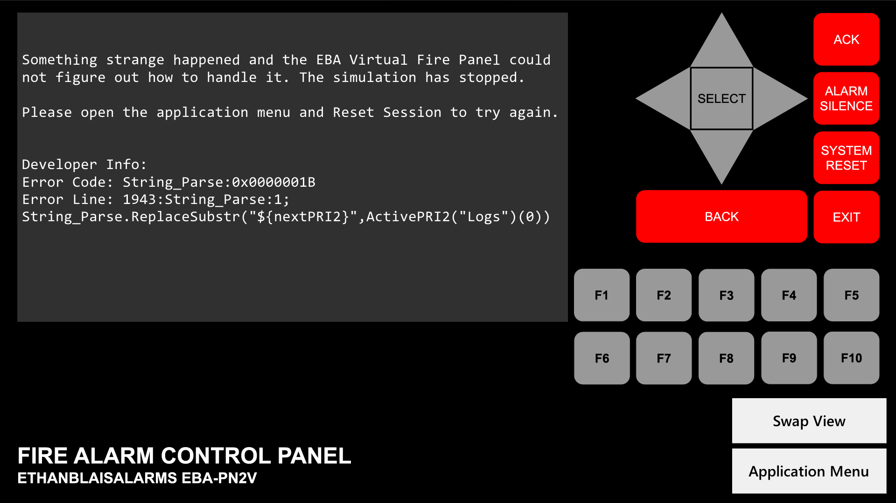

Issues
The EBA Virtual Fire Panel isn't perfect and there are some bugs with the program.
Firstly, there is a bug that prevents performing a Priority 2 Reset (which clears all active Priority 2 Alarms) if the first active Priority 2 Alarm is a Priority 2 Drill. Attempting to perform a Priority 2 Reset will cause the app to encounter an error that it can't handle, and the session must be reset to fix this. The cause is known but a workaround is yet to come. A normal reset (clears Priority 2 AND Fire Alarms) can still be used.
Secondly, there is a bug that prevents signals from functioning at all when the panel is in Walk Test. Walk Test is a feature that allows a single person to test the alarm system. Generally, when a point is activated, the alarm signals will sound a pattern depending on the activated address (ex: with a Simplex system, if point M2-40 activates, the alarm pulses 2 times, then 4, then a quick double pulse to indicate a 0). The cause is not known.
Third, there is a bug with the Read Status menu where devices with an address higher than 3 will show the status of the incorrect device. The cause is known and is being fixed.